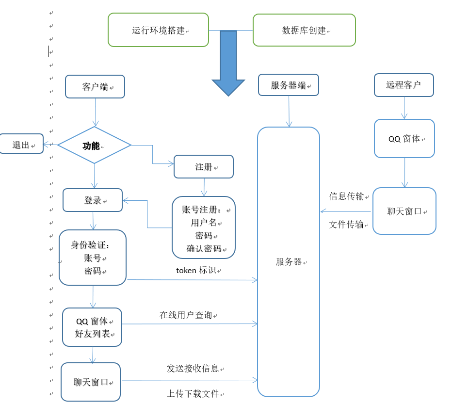
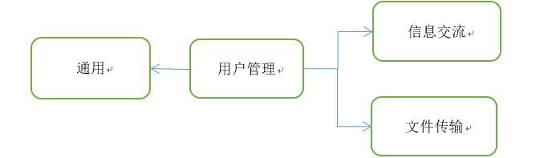
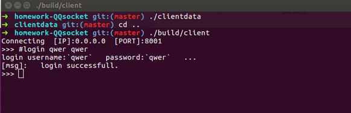
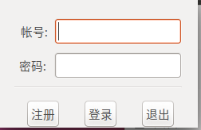
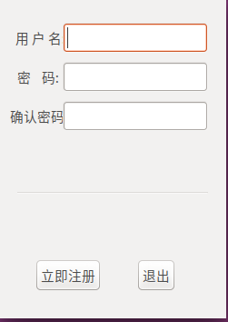
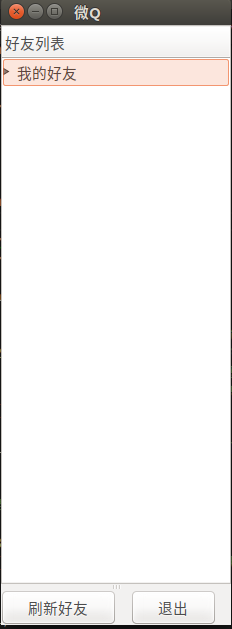

项目题目：设计一个类似于QQ或MSN的聊天系统。
项目功能：
王炳荃 ：UI界面设计与开发
韩慧 ：文档撰写与设计
李春洋 ：服务器搭建及命令行模式客户端开发
运行环境搭建 ：采用64位Linux操作系统。推荐使用ubuntu16.04 x64。调用了glib和sqlite3, 编译运行需安装好glib与sqlite的开发库（详细安装过程见 七 ）。
数据库创建： 数据库主要用于记录注册人员信息。
基于以上两个条件，程序才可运行。客户端登录时先判断是否已注册 ，若用户已注册，直接输入账号和密码点击登录即可；若未注册，则需点击注册进入注册界面，输入用户名、密码和确认密码；无操作需求则点击退出。
用户登录 时，服务器会随机分配一个token 标识，进入QQ界面后，好友列表 显示在线用户，选择某一在线用户，即可与其进行聊天和文件传输 。
文件传输时，划分文件区块，每次传输信息前附加文件区块信息，实现文件的 断点续传 功能。

由于程序编写与设计时，两人分工不同，沟通不畅通，导致UI没有完全实现服务器功能。且在服务器调试过程中，需要有客户端调试。因此最终产生了两种客户端，一为命令行界面，一为UI界面。
服务器采用epoll方法，单进程单线程多路复用方式进行TCP的传输。整个服务器运行期间存有以下几个哈希表
| 键 | 值 |
|---|---|
| 用户名 | sockfd |
| token | 用户名 |
| 用户名 | 昵称 |
| sockfd | event |
| sockfd | senddata |
采用哈希表保存临时数据，实现了数据的快速查找。
当收到用户信息时，服务器处理用户信息，并调用SendToFd函数，将要发送的数据放到sock2data指向的链表中。
第二次epoll时，从链表中循环读取要发送的数据，发送数据并释放数据占用的内存。
采用多进程 模式。两个进程：
两个进程之间采用共享内存 的方式进行数据的传输，共享的数据有用户登录的token，用户名，用户昵称等信息。
采用gtk框架，实现可视化的UI设计。UI采用多线程 模式，副线程从服务器接收信息，主线程向服务器发送信息。副线程接收到消息后，采用信号量等方式将数据传输到主线程，并由主线程进行信息的最终绘制过程。
#help //显示帮助
#status //显示客户端目前状态（是否在线，如果在线的话显示用户名）
#exit// 退出程序，正常登出
#signup [username] [password] [nickname]//注册用户
#login [username] [password] //登录用户
#logout //退出登录
#showlist //显示所有已登录用户
#sendto [sendto_username] [data] //向某一用户发送信息
// sendto_username: 要发送的目标用户名, // data: 发送的数据
#showfiles //显示服务器已存在的文件
#sendfile [filename] [dstfilename]//向服务器发送文件
//filename： 要发送的文件名
//dstfilename： 服务器端保存的文件名
#recvfile [filename] [id=0]// 从服务器下载文件
//filename 服务器的文件名
//id 断点续传的文件块，默认为0


| HEAD_MAIN | HEAD_USER |
|---|---|
| char mode | char logmode; char username[16];char password[16];char nickname[16]; |
| 1 | 49 |
| discript | HEAD_MAIN mode | HEAD_USER logmode | char username | char password | char nickname |
|---|---|---|---|---|---|
| login（登录） | 0 | 1 | username | password | [] |
| signup（注册） | 0 | 0 | username | password | nickname |
| HEAD_MAIN | HEAD_DATA |
|---|---|
| char mode | char token[44];char datamode;int datalen; |
| 1 | 49 |
| discript | HEAD_MAIN mode | token | HEAD_DATA datamode | int datalen |
|---|---|---|---|---|
| logout（登出） | 0 | token | 0 | 0 |
| senddata（向某一用户发送消息） | 0 | token | 1 | len |
| sendfile（客户端向服务器发送文件） | 0 | token | 10 | len |
| recvfile（客户端接收服务器存储的文件） | 0 | token | 20 | len |
| showfile（服务器文件列表） | 0 | token | 3 | 0 |
| showlist（显示在线用户） | 0 | token | 2 | 0 |
struct client_to_server_send_to_user_head
struct client_to_server_send_to_user_head{
char username[16];
int len;
};
| discript | 结构体属性 | 大小 |
|---|---|---|
| direction user | username | 16 |
| data len | len | int |
| data | ??? | ??? |
sendfile（客户端向服务器发送文件）
struct SEND_FILE
struct SEND_FILE{
char filename[32];
unsigned int id;
unsigned int perlength;
unsigned long filelength;
};
| discript | 结构体属性 | 大小 |
|---|---|---|
| 文件名 | filename | 32 |
| 文件分块ID | id | unsigned int |
| 文件分块大小 | perlength | unsigned int |
| 发送文件总大小 | filelength | unsigned long |
struct HEAD_RETURN
struct HEAD_RETURN{
char mode;
char succ;//是否成功
unsigned int datalen;
}HEAD_RETURN;
| discript | mode | succ | datalen |
|---|---|---|---|
| login（登录） | 11 | 0 or 1 | len |
| signup（注册） | 12 | 0 or 1 | 0 |
| another user login（登录的用户被其他人登录，自动下线） | 13 | 0 or 1 | 0 |
| logout（登出） | 21 | 0 or 1 | 0 |
| showlist（显示在线用户列表） | 22 | 0 or 1 | len |
| showfile（显示服务器文件列表） | 23 | 0 or 1 | len |
| senddata（自己的消息是否成功） | 20 | 0 or 1 | 0 |
| receive data（其他人发送来的消息） | 99 | 0 | len |
| recv sendfile(服务器接收到文件) | 35 | 0 or 1 | len |
| sendto user sendfile（服务器向客户端发送文件） | 30 | 0 or 1 | len |
| token error（用户登录异常） | 50 | 1 | 0 |
succ==0 successful; succ!=0 unsuccessful（0为成功）
struct server_login_return{
char nickname[16];
char token[32];
}server_login_return;
| discript | 结构体属性 | 大小 |
|---|---|---|
| 登录用户的昵称 | nickname | 16 |
| 标识用户身份的令牌 | token | 32 |
struct list_per_user{
char username[16];
char nickname[16];
}list_per_user;
| discript | 结构体属性 | 大小 |
|---|---|---|
| 第一个登录用户的用户名 | username | 16 |
| 第一个用户的昵称 | nickname | 16 |
| 第二个登录用户的用户名 | username | 16 |
| 第二个用户的昵称 | nickname | 16 |
| ... | ... | 16 |
HEAD_RETURN的datalen为 登录用户数量*sizeof(list_per_user)
struct list_per_file{
char filename[32];
unsigned long size;
};
返回n个list_per_file结构体，根据HEAD_RETURN中datalen判断n的大小。
datalen = n*sizeof(list_per_user)
| discript | 结构体属性 | 大小 |
|---|---|---|
| 文件名 | filename | 32 |
| 文件大小 | size | 8 |
struct server_to_client_send_to_user_head{
char username[16];
int len;
};
| discript | 结构体属性 | 大小 |
|---|---|---|
| 发送者用户名 | username | 16 |
| 数据长度 | len | 4 |
| 用户发送数据 | ??? | ??? |
struct SEND_FILE{
char filename[32];
unsigned int id;
unsigned int perlength;
unsigned long filelength;
};
| discript | 结构体属性 | 大小 |
|---|---|---|
| 文件名 | filename | 32 |
| 分块id | id | 4 |
| 块数据大小 | perlength | 4 |
| 文件总大小 | filelength | 8 |
| 文件块数据 | ??? | ??? |
struct SEND_FILE{
char filename[32];
unsigned int id;
unsigned int perlength;
unsigned long filelength;
};
| discript | 结构体属性 | 大小 |
|---|---|---|
| 文件名 | filename | 32 |
| 分块id | id | 4 |
| 块数据大小 | perlength | 4 |
| 文件总大小 | filelength | 8 |
| 文件块数据 | ??? | ??? |
注：文件分块大小不能改变
#define DEBUG true//是否debug（目前这一定义没用。。）
#define PERSTRLENGTH 200 //分割字符串的最大长度
#define TOKENSIZE 32//token大小
#define FILEPERLEN 1024//文件传输，分块大小
#define SAVEFILEPATH "data"//服务器文件保存目录
#define CLIENTDATAPATH "clientdata"//客户端文件保存目录
#define MAX_EVENTS 100 // 服务器每次循环event上限
#define DATABASENAME "data.sqlite3"//数据库服务器保存位置
struct HEAD_RETURN* client_recv_HEAD_RETURN(int sockfd);
struct server_login_return* client_recv_login_return(int sockfd);
struct server_to_client_send_to_user_head* client_recv_data_return(int sockfd);
struct list_per_user* client_recv_list_return(int sockfd);
int client_recv(int sockfd, char** nickname,char** token);
void message_out(char* data);
void message_out_login_peruser(char* username,char* nickname);
void client_recv_and_out_perlist(int sockfd);
void client_recv_and_out_data(int sockfd);
void message_out_recv_data(char* username,char* data,int len);
int Socket(int domain, int type, int protocol);
int Bind(int sockfd,struct sockaddr* addr,socklen_t size);
int Listen(int sockfd,int backlog);
int Accept(int sockfd,struct sockaddr* addr,socklen_t* size);
int Connect(int sockfd,struct sockaddr* addr,int size);
ssize_t Send(int sockfd, const void *buf, size_t len, int flags);
ssize_t Recv(int sockfd, void *buf, size_t len, int flags);
int CreateClient(char* serverip,int port);
int CreateServer(int port,int backlog);
struct HEAD_USER_ALL* data_login(char* username,char* password);
struct HEAD_USER_ALL* data_signup(char* username,char* password,char* nickname);
struct HEAD_DATA* data_HEAD_DATA(char* token, int mode,int len);
struct HEAD_DATA* data_logout(char* token);
struct HEAD_DATA* data_showlist(char* token);
struct HEAD_DATA* data_sendto(char* token);
struct HEAD_DATA* data_showfile(char* token);
struct HEAD_DATA* data_sendfile(char* token);
struct HEAD_RETURN* data_head_return(char mode,char succ,unsigned int datalen);
#define PERSTRLENGTH 200 //分割字符串的最大长度
char** split(char* str); // 分割字符串为2段
char** split_num(char* str,int num);//分割字符串为num段
void free_splitdata(char** data);// 释放分割字符串空间
void free_splitdata_num(char** data,int num);// 释放分割字符串空间
char* itoa(int num);
char* ltoa(long num);
char* ptoa(void* num);
可以使用make test_mysring测试
struct SEND_FILE* recv_sendfile_head(int sockfd);
void mergeFiles(char* filename, unsigned int maxid, unsigned int perlength, unsigned long filelength);
struct SEND_FILE* sendfile_head(char* filename, unsigned int id, unsigned int datalen, unsigned long filelength);
void client_sendfile(int sockfd,char* token,char* path,char* filename);
int trave_dir(char* path, struct file_list** data);
void client_startrecv_id(int sockfd,char* token, char* filename,int id,long filelength);
void client_recvfile(int sockfd,char* path,char* token);
char* createToken(int len); // 创建长度len-1的随机字符串（最后一位是'\0'）[需要手工free]
void print16(char* data,int size);// 每个字节以16进制输出
void printAscii(char* data,int size);
char* encodePassword(char* password); // TODO
int Sqlite3_open(char* name,sqlite3** db);// open database
sqlite3* createDatabase(sqlite3* db);// create new database
sqlite3* databaseInit();//auto open or create database
int sql_createUser(sqlite3* db,char* username,char* password,char* nickname);
int sql_login(sqlite3* db,char* username,char* password,char** gettingnick);
int sql_changeNickname(sqlite3* db,char* username,char* newnickname);
int sql_all(sqlite3* db,char*** data,int* row,int* col);
// sql_all(db,NULL,NULL,NULL); auto printf database data;
/*
- sql_all(db,NULL,NULL,NULL);
- char** data;
int row,col;
sql_all(db,&data,&row,&col);
*/
| 文件 | 功能说明 |
|---|---|
| client.c | 客户端主程序 |
| client_recv.c | 客户端接收功能的封装 |
| encode.c | 传输信息编码 |
| filetransport.c | 文件传输的函数封装 |
| g_hash_extend.c | 扩展glib哈希表功能 |
| mysocket.c | 套接字封装 |
| mystring.c | 字符串处理 |
| mystruct.c | 定义传输结构体 |
| server.c | 服务器主程序 |
| sql.c | 数据库封装 |
| test_*.c | 测试单元功能 |
sudo apt-get install sqlite3
sudo apt-get install libsqlite3-dev
wget http://ftp.gnome.org/pub/gnome/sources/glib/2.54/glib-2.54.2.tar.xz
tar -xvJf ./glib-2.54.2.tar.xz
cd ./glib-2.54.2.tar.xz
sudo apt-get install gcc
sudo apt-get install zlib1g-dev
sudo apt-get install pkg-config
sudo apt-get install libffi-dev
sudo apt-get install gettext
sudo apt-get install libmount-dev
sudo apt-get install libpcre3-dev
make
make install
# show the gcc option
pkg-config glib-2.0 --libs
sudo cp -r /usr/local/include/glib-2.0/* /usr/include/
sudo cp /usr/local/lib/glib-2.0/include/glibconfig.h /usr/include/
./configure --prefix=/usr/local/glib --enable-static --disable-shared CFLAGS="-static"
make test
make
make all
./server 8001 # 可以不输入端口号，默认8001
# another shell
./client.out 0.0.0.0 8001 # 两个参数分别为连接的IP 和端口号



登录 
注册 
添加好友

显示好友列表 
信息交互


项目源代码及文件已托管到github： QQsocket